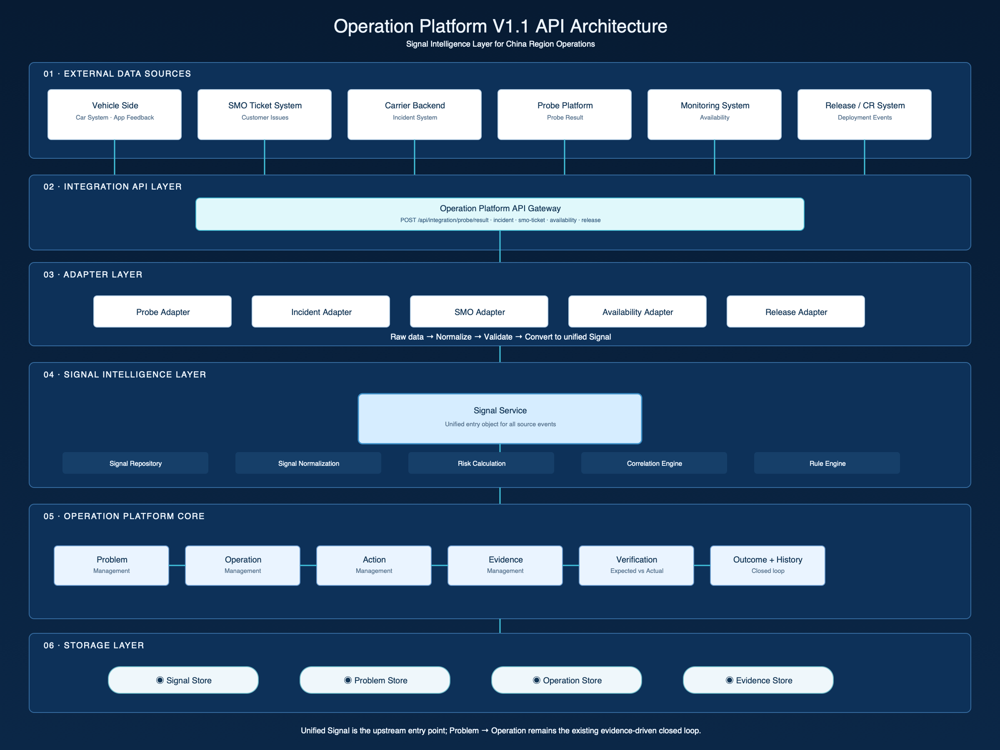
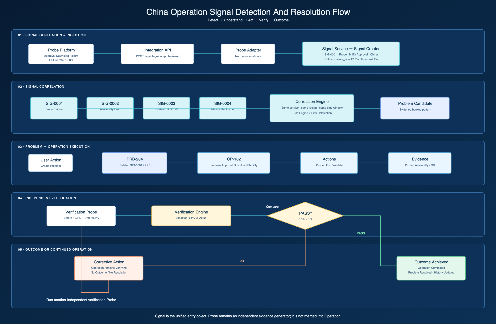
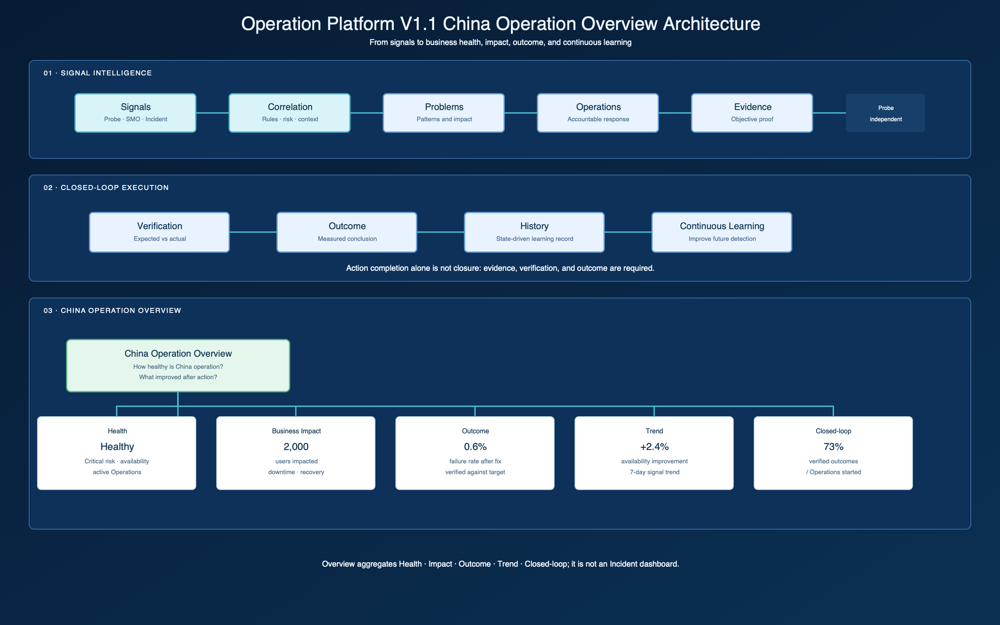

V1.1 adds a Signal Intelligence Layer upstream of the existing V1 P0 closed loop. External China-region events are normalized into a common Signal object, correlated into Problem Candidates, and then passed into the existing Problem → Operation → Action → Evidence → Verification → Outcome → History workflow.
External Sources → API / Integration → Source Adapter → Signal Service → Correlation → Problem → Operation → Action → Evidence → Verification → Outcome → China Operation Overview → History

POST /api/signals GET /api/signals GET /api/signals/:id POST /api/problems/from-signals POST /api/integration/probe/result POST /api/integration/incident POST /api/integration/smo-ticket POST /api/integration/availability POST /api/integration/release
These are mock contracts only. No real external API, Kafka, database, email ingestion, or AI correlation is introduced in V1.1.

SIG-0001 (Probe, 12.8% failure, China) → Correlation (same service / region / time window) → PRB-204 Approval Download Instability → OP-102 Improve Approval Download Stability → Action + Probe / Availability / Release Evidence → Verification Probe (expected < 1%, actual 0.6%) → OUT-001 Objective Achieved → Operation Completed + Problem Resolved + History

The Overview answers: How healthy is China operation? What did we resolve? Did our Operations actually improve the situation? Command Center remains a separate attention queue answering what needs action now.
| Object | Role | Key relationship |
|---|---|---|
| Signal | Observed abnormal condition or business/technical event | Source-specific event → Signal → Problem |
| Incident | Backend-reported technical context | Incident → Signal; may contribute to Problem |
| Problem | Correlated pattern across signals, impact, and evidence | Problem → Operation |
| Operation | Accountable effort with objective, owner, actions, and verification | Operation → Action / Evidence / Outcome |
| Action | Executable task with expected result and owner | Action → Evidence |
| Probe | Independent evidence generator | Probe Result → Signal and Evidence |
| Evidence | Objective proof of condition, action, or outcome | Evidence → Verification |
| Outcome | Measured conclusion after verification | Outcome → History |
{
id, source, type, service, region, environment,
severity, status,
metric: { name, value, threshold, unit },
impact: { userAffected, businessImpact },
timestamp, relatedObjects, problemId, correlationScore
}
V1.1 uses Mock Data and a browser-local shared State Layer. The API files define the replacement boundary for future real services while the UI remains decoupled from source-specific payloads.
server.js remains unchanged.